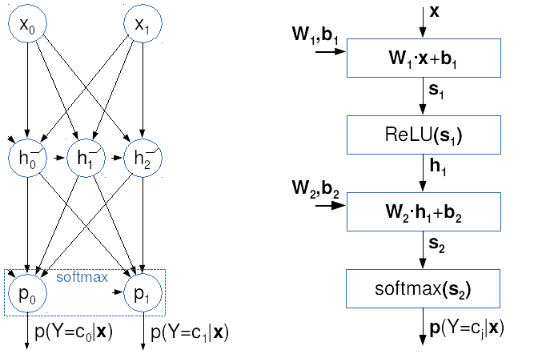
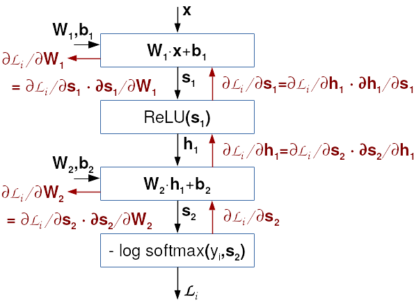
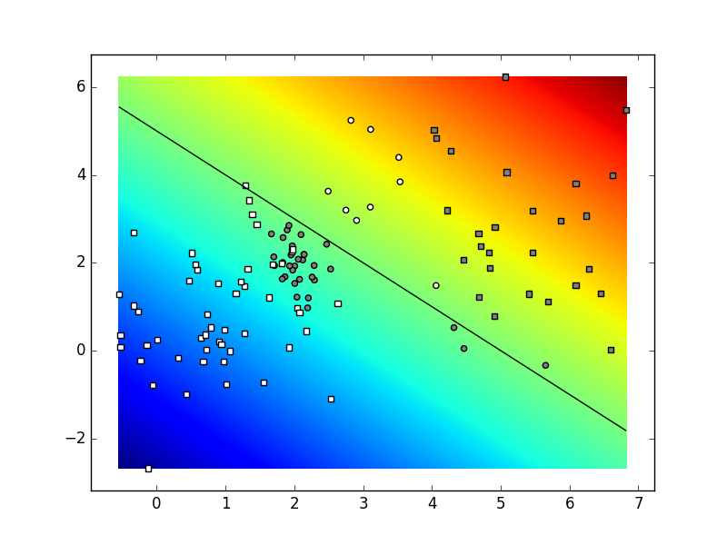
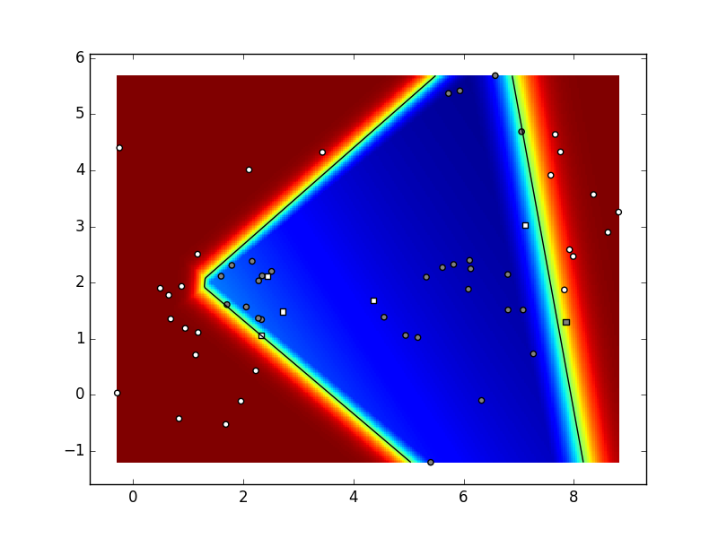
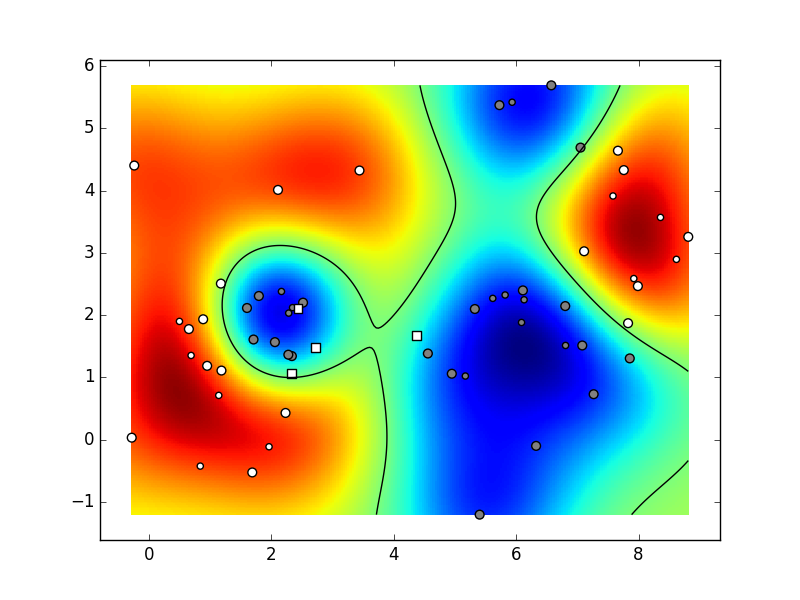

Predmet ove vježbe su unaprijedni duboki modeli za klasifikaciju. Pokazat ćemo da se ti modeli mogu promatrati ili kao višeslojne unaprijedne neuronske mreže ili kao produbljeni logistički modeli koje smo upoznali u nultoj vježbi. Oba pogleda vode na istu programsku izvedbu koja se temelji na optimiranju izglednosti parametara modela. Kako bismo olakšali razvoj i ubrzali eksperimentiranje, proučit ćemo mogućnost automatske diferencijacije koju danas nude brojni programski okviri za numeričku optimizaciju. Posebnu pažnju poklonit ćemo PyTorchu kao jednom od najčešće korištenih alata te kategorije.
Cilj vježbe je razviti sedam modula:
data,
fcann2,
pt_linreg,
pt_logreg,
pt_deep,
ksvm_wrap,
i mnist_shootout.
Modul data će biti nadograđena
verzija istoimenog modula iz nulte vježbe.
Modul fcann2 će sadržavati implementaciju
dvoslojnog potpuno povezanog modela
temeljenog na NumPyjevim primitivima.
Organizacijski i izvedbeno, taj modul bi trebao biti
vrlo sličan modulu logreg iz nulte vježbe.
Sljedeća tri modula sadržavat će implementacije
triju postupaka strojnog učenja rastuće složenosti,
temeljene na okviru PyTorch.
Modul ksvm_wrap će umatati
klasifikator s jezgrenim ugrađivanjem i potpornim vektorima
izveden u modulu sklearn.svm biblioteke
scikit-learn te omogućiti usporedbu
s klasifikatorima temeljenima na dubokom učenju.
Konačno, modul mnist_shootout
će usporediti performansu do tada razvijenih klasifikatora
na skupu podataka MNIST.
Duboki modeli strojnog učenja temelje se
na apstraktnim reprezentacijama podataka
do kojih dolazimo slijedom
naučenih nelinearnih transformacija.
U ovoj i sljedećoj vježbi razmatramo duboke modele
koji su diskriminativni i unaprijedni.
Diskriminativni model za dani podatak
na izlazu izravno generira uvjetnu vjerojatnost
zavisne varijable .
Diskriminativne modele tipično koristimo
kad na raspolaganju imamo
Umjetne neuronske mreže su model strojnog učenja kojeg izražavamo usmjerenim grafom skalarnih procesnih jedinica koje nazivamo umjetnim neuronima. Jedan od važnih ciljeva neuronskih mreža je postavljanje računskog modela biološkog učenja odnosno razumijevanje mehanizama učenja u mozgu živog bića. Iako je vrlo srodno neuronskim mrežama, duboko učenje nema ambiciju modelirati biološke procese, nego proučava učenje kompozicijskih modela od praktičnog značaja koji mogu i ne moraju imati biološku interpretaciju.
Umjetni neuroni tipično provode afinu redukciju ulaznog vektora, što možemo sažeto prikazati izrazom . Pri tome vektor predstavlja ulazne varijable, vektor i skalar predstavljaju slobodne parametre koji se optimiraju postupkom učenja, dok predstavlja tzv. prijenosnu funkciju umjetnog neurona. Uloga prijenosne funkcije je da u model unese nelinearnost. Ako za odaberemo funkciju softmax, umjetni neuron će provoditi višerazrednu logističku regresiju. Ako za odaberemo sigmoidalnu funkciju , umjetni neuron će provoditi binarnu logističku regresiju. Zbog boljeg učenja dubokih modela, sigmoidu danas istiskuje zglobnica (engl. rectified linear unit, ReLU) .
Neuronska mreža s jednim ulaznim slojem, sofmaksom na izlazu, i gubitkom koji maksimizira izglednost parametara ekvivalentna je logističkoj regresiji. Međutim, na ovom kolegiju proučavamo "produbljene" modele koje dobivamo kad između ulaza i izlaza logističke regresije dodamo jednu ili više nelinearnih transformacija. Među njima, posebnu klasu čine unaprijedni modeli u kojima ne postoje povratne veze među neuronima. Takve modele možemo predstaviti acikličkim usmjerenim grafom gdje čvorovi odgovaraju neuronima, dok lukovi modeliraju povezanost neurona. Poput logističke regresije, unaprijedne duboke modele najčešće učimo gradijentnim spustom koji optimira izglednost predviđanja modela. Suprotno od logističke regresije, funkcija gubitka dubokih modela nije konveksna, što znači da ne postoji garancija da ćemo naći globalni optimum.
U ovoj vježbi posebno će nam biti zanimljive višeslojne mreže s potpuno povezanim slojevima. U takvim mrežama neurone možemo organizirati u slojeve za koje vrijedi da neuroni sloja na svojim ulazima primaju sve neurone sloja . Za razliku od logističke regresije, višeslojni modeli mogu modelirati nelinearnu decizijsku granicu, ali po cijeni nekonveksne funkcije cilja.
U posljednje vrijeme popularno je, umjesto pojedinih neurona, čitav sloj promatrati kao kompoziciju linearnog i nelinearnog koraka obrade. Ako se dogovorimo da prijenosna funkcija vektorskog operanda odgovara konkatenaciji prijenosnih funkcija komponenata, dolazimo do sljedećeg sažetog zapisa k-tog sloja unaprijedne potpuno povezane mreže sa zglobnom aktivacijom:
Sljedeća ilustracija prikazuje dva pogleda na istu potpuno povezanu unaprijednu mrežu. Na lijevoj strani je klasični prikaz gdje krugovi odgovaraju neuronima sa skalarnim izlazom i zglobnom prijenosnom funkcijom. Na desnoj strani je vektorizirani računski graf kojeg ćemo koristiti u ovom kolegiju: 
Razmotrimo sada kako bismo odredili gradijente u prethodno prikazanom primjeru dvoslojnog potpuno povezanog modela. Izrazimo klasifikacijski model vektorskim jednadžbama:
Naša funkcija gubitka biti će prosjek negativne log-izglednosti modela preko svih podataka:
Vidimo da funkcija gubitka u podatku odgovara kompoziciji većeg broja jednostavnijih funkcija. Gubitak ovisi o vjerojatnostima koje ovise o linearnoj klasifikacijskoj mjeri drugog sloja koja ovisi o skrivenom sloju i parametrima i . Skriveni sloj ovisi o svojoj linearnoj mjeri , koja konačno ovisi o parametrima i te podatcima . Stoga gradijente gubitka obzirom na parametre određujemo ulančavanjem. Parcijalne derivacije gubitka po j-tim retcima i biti će vrlo slične onom što smo imali u višerazrednoj logističkoj regresiji. U obzir ćemo uzeti algebarsku strukturu problema, tj. da vrijedi: Da bismo postigli kompaktniji zapis koristit ćemo matricu aposteriornih vjerojatnosti te matricu vektorski kodiranih oznaka koje smo uveli u nultoj vježbi. Na kraju dobivamo sljedeće izraze:
Put do gradijenata po i nešto je složeniji, jer gradijente treba propagirati preko svih komponenata drugog sloja. Međutim, to propagiranje nije komplicirano jer Jakobijan linearnog sloja odgovara matrici težina, dok je Jakobijan zglobnice dijagonalna matrica koja na dijagonali ima nule i jedinice ovisno o predznaku odgovarajuće komponente prvog sloja. Kad konačno dođemo do linearne mjere prvog sloja, možemo iskoristiti izvode koje smo bili dobili u drugom sloju. Ovisnost linearne klasifikacijske mjere drugog sloja o parametrima drugog sloja posve je jednaka ovisnosti linearne mjere prvog sloja o parametrima prvog sloja. Stoga su analitički izrazi parcijalnih derivacija vrlo slični odgovarajućim izrazima u drugom sloju:
Ovdje valja primijetiti kako naša ambicija nije brzo izračunati pojedine gradijente za pojedine podatke. Naprotiv, naš cilj je brzo izračunati sve gradijente za sve podatke oslanjanjem na optimirane biblioteke matrične algebre. S obzirom na to da najveći doprinos brzini možemo ostvariti memorijskim optimizacijama, model trebamo izraziti matričnim operacijama koje djeluju nad svim podatcima. Stoga ćemo, kao i kod logističke regresije gradijente svakog sloja računati odjednom za sve retke parametara i za sve podatke.
Međutim, za razliku od logističke regresije, u dubokim mrežama moramo donijeti odluku o redoslijedu računanja gradijenata (npr. hoćemo li prije računati ili ). Putokaz za rješavanje tog rebusa daje nam algoritam širenja unatrag.
U prikazanim jednadžbama možemo uočiti jednu specifičnost dubokih modela: vidimo da se parcijalna derivacija javlja u sva četiri gradijenta po parametrima funkcije gubitka. Tu specifičnost možemo iskoristiti kako bismo do željenih gradijenata došli uz minimalni računski napor. Parcijalne derivacije funkcije cilja po čvorovima računskog grafa nećemo morati računati više od jednom ako ih budemo računali unatrag, od izlaza prema ulazu mreže. Taj jednostavni ali vrlo efikasni pristup formalizira algoritam širenja unatrag (engl. backprop).
Postupak širenja pogreške unatrag prikazali smo na sljedećoj slici. Crne strelice prikazuju evaluiranje modela i računanje gubitka u zadanom podatku (tzv. unaprijedni prolaz, engl. forward pass). Crvene strelice prikazuju postupno računanje gradijenata prema algoritmu širenja unatrag (tzv. unatražni prolaz, engl. backward pass).

Sad se čini da su nam poznate sve komponente rješenja našeg problema. Znamo kako računati gradijente s obzirom na pojedine parametre, kao i kojim redoslijedom to obaviti. Međutim, htjeli bismo prije kraja još jednom naglasiti dva netrivijalna detalja. Prvi detalj je petlja po podatcima. Ako želimo uživati prednosti optimiranih biblioteka i izbjeći iteriranje u Pythonu, onda svaki pojedini gradijent trebamo odjednom izračunati za sve podatke. Ako imamo 100000 podataka, prvo ćemo izračunati 100000 redaka matrice , zatim 100000 redaka matrice , itd. Ovakav pristup je vrlo neobičan za inženjere koji su navikli sve pisati u vlastitom aranžmanu, jer strahovito povećava memorijske zahtjeve postupka. Međutim, tu cijenu moramo platiti, jer u suprotnom naš algoritam ne bismo mogli izraziti optimiranim lego-kockicama za matrične operacije pa bi nam učenje bilo sporije za nekoliko redova veličine.
Drugi detalj je računanje gradijenata težina.
Ovdje vam preporučamo da umjesto odvojenog računanja
gradijenata po retcima težina
(kao što sugeriraju gore navedene jednadžbe)
koristite pristup kojeg smo u nultoj vježbi
pokazali na logističkoj regresiji
(isp. odjeljak 0d uvodne vježbe).
Naime, nije previše teško pokazati
da se kompletna matrica gradijenata
(koja se u iteraciji gradijentnog spusta
naprosto dodaje matrici težina)
može izraziti jednostavnim matričnim umnoškom.
Gradijente težina u k-tom sloju
dobivamo množenjem transponirane matrice gradijenata gubitka
po linearnoj mjeri k-tog sloja u svim podatcima
s matricom svih ulaza u k-ti sloj
.
Na sličan način računamo i sve gradijente
po komponentama pomaka k-tog sloja.
Ovdje nam umjesto matričnog množenja
treba zbrajanje stupaca matrice ,
a za to možemo koristiti funkciju np.sum.
U konkretnom primjeru naše dvoslojne mreže, imali bismo sljedeći redoslijed računanja parcijalnih derivacija funkcije gubitka:
Kod modela učenih s gradijentnim spustom početna inicijalizacija parametara predstavlja jako važnu odluku. Kod latentnih slojeva aktiviranih zglobnicom, aktivacije moraju biti centrirane oko nule tako da zglobnica dođe do izražaja. Primjerice, kad bi svi ulazi bili pozitivni i kad bi sve težine bile pozitivne, sve zglobnice bi bile propusne i učinak sloja bio bi u potpunosti linearan. To ne može biti dobro jer je kombinacija linearnih transformacija ponovo linearna transformacija, a znamo da linearne transformacije imaju puno manji kapacitet od duboke kompozicije nelinearnih transformacija. Pouka ove rasprave jest da će učenje dubokog modela dobro napredovati ako:
PyTorch je biblioteka otvorenog koda za oblikovanje metoda strojnog učenja s naglaskom na sljedeće ključne mogućnosti:
Iako postoje i drugi slični alati (TensorFlow, MXNet, ...), PyTorch je trenutno najpopularniji među istraživačima, pogodan je i za početnike zbog čiste organizacije i dobre dokumentacije.
PyTorch podržava različite operacijske sustave. Za strojno učenje općenito najviše podrške ima i najažurniji je Linux. Najsvježije informacije o PyTorchu možete naći na službenim stranicama.
Ilustrirajmo zadavanje programa u PyTorchu na jednostavnom primjeru:
import torch
# definiranje operacije
def f(x, a, b):
return a * x + b
# definiranje varijabli i izgradnja dinamičnog
# računskog grafa s unaprijednim prolazom
a = torch.tensor(5., requires_grad=True)
b = torch.tensor(8., requires_grad=True)
x = torch.tensor(2.)
y = f(x, a, b)
s = a ** 2
# unatražni prolaz koji računa gradijent
# po svim tenzorima zadanim s requires_grad=True
y.backward()
s.backward() # gradijent se akumulira
assert x.grad is None # pytorch ne računa gradijente po x
assert a.grad == x + 2 * a # dy/da + ds/da
assert b.grad == 1 # dy/db + ds/db
# ispis rezultata
print(f"y={y}, g_a={a.grad}, g_b={b.grad}")
Prvi dio prikazanog primjera definira običnu funkciju u Pythonu. Povratna vrijednost te funkcije transparentno će se uklopiti u računski graf PyTorcha.
Drugi dio primjera stvara objekte
a, b i x tipa torch.Tensor
koij će odgovarati listovima računskog grafa.
Tenzori a i b
imaju atribut requires_grad=True,
što znači da če za njih PyTorch
pri automatskom unatražnom prolazu izračunati gradijent.
Pozivanje operacija *, + i **
stvara nove objekta tipa torch.Tensor
koji su također čvorovi računskog grafa.
Dalje ćemo objekte tipa torch.Tensor nazivati tenzorima.
PyTorch pri izračunavanju vrijednosti čvorova računskog grafa
pamti sve međurezultate koji su potrebni za računanje gradijenta.
Detalje određuje algoritam za automatsku diferencijaciju
kojeg možemo skraćeno zvati
autograd.
Treći dio primjera računa gradijente
s obzirom na čvorove y i s
pozivima metode backward.
Autograd provodi unatražnu propagaciju
sve do a i b
te tako računa njihov gradijent.
Višestruki pozivi metode backward
akumuliraju gradijente u atributu grad
svakog od tenzora deklariranih s requires_grad=True.
Primijetite da slijed poziva y.backward(); a.backward()
postiže isti učinak kao i (y + a).backward().
Atribut grad također je primjerak razreda
torch.Tensor, ali je najčešće odvojen
od računskog grafa u kojem je njegov matični tenzor.
Računanje viših derivacija možemo postići
pozivanjem metode backward
s argumentom create_graph=True,
čime se traži da u računski graf uđu i derivacije tenzora.
Ako želimo iznova izračunati gradijent
(npr. za neki drugi x),
onda moramo poništiti postojeći gradijent
kako bismo izbjegli akumuliranje.
To možemo postići brisanjem atributa grad
postavljanjem npr. a.grad=None.
Ako nam za neki proračun ne treba izračun gradijenta,
dobro je izraziti ga u tijelu
upravitelja konteksta torch.no_grad()
koji isključuje Autograd (tada se PyTorch ponaša kao NumPy).
Ovdje je primjer procedure koja računa konfuzijsku
matricu na temelju vektora indeksa točnih oznaka y_true
i predikcija y_pred
te vraća konfuzijsku matricu dimenzija
class_count×class_count.
import torch.nn.functional as F
def multiclass_confusion_matrix(y_true, y_pred, class_count):
with torch.no_grad():
y_pred = F.one_hot(y_pred, class_count)
cm = torch.zeros([class_count] * 2, dtype=torch.int64, device=y_true.device)
for c in range(class_count):
cm[c, :] = y_pred[y_true == c, :].sum(0)
return cm
Ovaj primjer pokazuje da PyTorch omogućuje kopiranje tenzora (i izračuna)
između različitih platformi/uređaja primjenom
opcionalnog argumenta device,
koji primaju sve funkcije PyTorcha koje stvaraju nove tenzore.
Primijetite da pri tome tip podatka možemo zadati
primjenom opcionalnog argumenta dtype.
Umjesto pokazanog poziva funkcije torch.zeros
mogli bismo navesti i eksplicitnu konverziju
torch.zeros([class_count] * 2).to(dtype=torch.int64, device=y_true.device),
koja bi dala jednak rezultat, ali bi prouzročila nepotrebno stvaranje jednog privremenog tenzora.
Tipične vrijednosti argumenta device su
torch.device('cpu') (glavni procesor i memorija)
ili torch.device('cuda:0') (prvi GPU pod platformom CUDA).
Uređaj možemo zadati i znakovnim nizom:
device='cpu' ili device='cuda:0'.
Više informacija možete naći u službenoj dokumentaciji PyTorcha.
Program koji koristi PyTorch tipično sadrži sljedeće komponente:
torch.nn.Module
koji tipično sadrži druge module s parametrima,
Procedure za učitavanje i obradu podataka tipično uključuju:
torch.utils.data.Dataset
__len__ tog objekta
tipično vraća broj podataka,
__getitem__ tog objekta
često učitava podatak iz datotečnog sustava
zato što svi podatci ne mogu stati u radnu memoriju;
torch.utils.data.Sampler),
torch.utils.data.DataLoader).
Elementi algoritma učenja tipično uključuju:
torch.optim.Optimizer
Sljedeći kod prikazuje primjer modela koji obavlja afinu transformaciju:
import torch
class Affine(torch.nn.Module):
def __init__(self, in_features, out_features):
super().__init__()
self.out_features = out_features
self.linear = torch.nn.Linear(in_features, out_features, bias=False)
self.bias = torch.nn.Parameter(torch.zeros(out_features))
def forward(self, input):
return self.linear(input) + self.bias
Prikazani primjer sadrži podmodel tipa torch.nn.Linear
(koji već sam po sebi podržava pomak, ali to radi primjera ne koristimo)
i parametar tipa torch.nn.Parameter.
Tip torch.nn.Parameter
je izveden iz torch.Tensor i uglavnom služi
za razlikovanje parametara od drugih tenzora
(atribut requires_grad
podrazumijevano se postavlja na True).
Razred torch.nn.Module
definira metode koje vraćaju iteratore
po podmodulima (children), modules),
parametrima (parameters) itd.
Metode s prefiksom named_ vraćaju
parove imena (putova) i objekata,
kao što pokazuje sljedeći primjer:
>>> affine = Affine(3, 4)
>>> print(list(affine.named_parameters()))
[('bias',
Parameter containing:
tensor([0.000, 0.000, 0.000], requires_grad=True)),
('linear.weight',
Parameter containing:
tensor([[-0.052, -0.204, -0.134],
[ 0.167, 0.467, -0.180],
[ 0.285, -0.055, 0.469]], requires_grad=True))]
Module obično oblikujemo tako da mogu raditi
nad mini-grupama podataka.
Primjerice, poziv
affine(torch.randn(5, 3))
rezultira tenzorom dimenzija (5, 4),
pri čemu torch.randn(5, 3)
stvara matricu slučajnih normalno distribuiranih elemenata.
Više o modulima se može naći u službenoj dokumentaciji.
Različite procedure za inicijalizaciju parametara su u paketu torch.nn.init.
Sljedeći primjer demonstrira osnove učitavanja podataka:
import numpy as np
import torch
from torch.utils.data import DataLoader
dataset = [(torch.randn(4, 4), torch.randint(5, size=())) for _ in range(25)]
dataset = [(x.numpy(), y.numpy()) for x, y in dataset]
loader = DataLoader(dataset, batch_size=8, shuffle=False,
num_workers=0, collate_fn=None, drop_last=False)
for x, y in loader:
print(x.shape, y.shape)
Primjer prvo generira slučajan skup od 25
slučajnih parova matrica 4x4 i skalara.
Podatci se iz demonstrativnih razloga
bez kopiranja prebacuju u tip numpy.ndarray
pozivanjem metode numpy.
Skup podataka predaje se konstruktoru razreda DataLoader
čiji primjerak ostvaruje iteriranje po mini-grupama.
Slijede neki bitniji argumenti koje prima konstruktor.
Argument batch_size je veličina mini-grupe.
Argument shuffle je logička vrijednost
koja određuje hoće li se prije svakog prolaza
odabrati nasumični redoslijed.
Argument num_workers je broj paralelnih procesa za učitavanje podataka.
Argument collate_fn je funkcija koja iz pojedinih podataka slaže mini-grupe.
U podrazumijevanom slučaju collate_fn=None
poziva se funkcija torch.as_tensor,
što NumPyjev niz bez kopiranja pretvara u torch.Tensor.
Argument drop_last je Booleova vrijednost
koja određuje hoće li se ispustiti zadnja
mini-grupa ako je preostalo manje ods
batch_size elemenata za zadnu mini-grupu.
U prikazanom slučaju program će 3 puta ispisati
torch.Size([8, 4, 4]) torch.Size([8])
i jednom torch.Size([1, 4, 4]) torch.Size([1]).
Više o učitavanju podataka se može naći u
službenoj dokumentaciji.
Sljedeća procedura opisuje primjer iteracije kod nadziranog učenja:
def supervised_training_step(ctx, x, y):
ctx.model.train() # postavljanje modela u stanje za učenje
output = ctx.model(x) # unaprijedni prolaz
loss = ctx.loss(output, y).mean() # izračun gubitka
ctx.optimizer.zero_grad() # postavljanje gradijenta u 0
loss.backward() # unatražni prolaz
ctx.optimizer.step() # primjena koraka optimizacije
ctx je pristupni objekt koji obuhvaća
model model,
funkciju gubitka loss i
optimizacijski algoritam optimizer.
x i y su ulazna i izlazna mini-grupa.
Prvo se model postavlja u stanje za učenje
jer može sadržavati module kao što su dropout ili normalizacija po podacima
koji se pri učenju različito ponašaju nego kod evaluacije.
Zatim se u unaprijednom prolazu računaju izlaz modela
i srednji gubitak na mini-grupi.
Nakon toga slijedi korak optimizacije.
Objekt optimizer je tipa izvedenog iz torch.optim.Optimizer
te referencira parametre.
Ovako izgleda jednostavan primjer stvaranja optimizatora:
from torch.optim import SGD
optimizer = SGD(model.parameters(), lr=1e-2, weight_decay=1e-4)
Osnovni argumenti su parametri i
veličina optimizacijskog koraka lr.
Radi efikasnosti, PyTorch nudi mogućnost provođenja
L2 regularizacije izravno u optimizatoru.
Zbog toga se u konstruktoru pojavljuje argument weight_decay.
Glavne metode optimizatora su zero_grad i step.
Metodu zero_grad treba pozvati
prije svakog računanja gradijenta ako ga ne želimo akumulirati.
Metoda step izvršava korak optimizacije.
U slučaju gradijentnog spusta,
ta metoda umanjuje sve parametre
za odgovarajući gradijent
pomnožen veličinom koraka.
Više o optimizatorima se može naći u
službenoj dokumentaciji.
Rješenje ove vježbe slobodno preuzmite ovdje.
U dosadašnjim eksperimentima logistička regresija je postizala iznimno dobre klasifikacijske rezultate. To nije nikakvo čudo jer se pokazuje da aposteriorna vjerojatnost razreda podataka generiranih Gaussovim razdiobama s dijeljenom kovarijancom odgovara upravo sigmoidi afino transformiranih podataka. Istina, u našim smo eksperimentima mrvicu odstupili od teoretskih pretpostavki (naši razredi su imali različite kovarijance), ali rezultati pokazuju da to odstupanje nije bilo presudno. Sada ćemo situaciju malo otežati na način da pozitivne i negativne podatke generiramo nešto složenijim generativnim modelom.
Upute:
sample_gmm_2d(K, C, N)
koja stvara K ≥ C slučajnih
bivarijatnih Gaussovih razdioba,
te iz svake od njih uzorkuje N podataka.
Za razliku od funkcije sample_gauss_2d
ovdje svakoj bivarijatnoj razdiobi Gi
trebamo pridružiti razred ci
koji slučajno biramo iz skupa {0, 1, ..., C-1}.
Na taj način dobivamo podatkovne razrede generirane
mješavinama slučajno odabranih Gaussovih razdioba.
Kao i ranije, funkcija treba vratiti matricu X
čiji retci odgovaraju uzorkovanim podatcima
te matricu Y čiji jedini stupac sadrži
indeks razreda odgovarajućeg podatka.
0 do C - 1.
Zatim je potrebno iz svake distribucije
uzorkovati traženi broj podataka.
Svi podatci uzorkovani iz iste distribucije
trebaju dobiti indeks razreda koji je
dodijeljen toj distribuciji.
'''
X ... podatci u matrici [K·N x 2 ]
Y_ ... indeksi razreda podataka [K·N]
'''
Izvedite potprogram sample_gmm_2d
te ga ispitajte uz pomoć prethodno razvijenih
potprograma za crtanje
(graph_surface i graph_data).
Ovisno o parametrima i stanju generatora slučajnih brojeva,
vaš rezultat mogao bi izgledati kao na sljedećoj slici.
Naši parametri bili su
K=4,
C=2,
N=30.

Ako je rezultat izvođenja prihvatljiv,
pohranite kod u datoteku data.py.
Oblikujte i izvedite modul fcann2
za rad s probabilističkim klasifikacijskim modelom
s jednim skrivenim slojem prema uputama iz odjeljka
0a.
Neka organizacija vašeg koda bude sukladna
organizaciji modula logreg
iz prethodne vježbe.
Napišite metode fcann2_train,
fcann2_classify.
Isprobajte njihov rad na umjetnom skupu
2D podataka dvaju razreda dobivenih
iz Gaussove mješavine od 6 komponenata.
Ovisno o parametrima i stanju generatora slučajnih brojeva,
vaš rezultat mogao bi izgledati kao na sljedećoj slici.
Naši parametri bili su:
K=6,
C=2,
N=10,
param_niter=1e5,
param_delta=0.05,
param_lambda=1e-3 (koeficijent regularizacije),
dimenzija skrivenog sloja: 5.

Ako je rezultat prihvatljiv, pohranite kod
u datoteku fcann2.py.
Jednostavan primjer implementacije algoritma strojnog učenja
u PyTorchu prikazat ćemo na potpunom primjeru
optimizacijskog postupka za određivanje parametara
pravca y = a * x + b
koji prolazi kroz točke
(1,3) i (2,5).
import torch
import torch.nn as nn
import torch.optim as optim
## Definicija računskog grafa
# podaci i parametri, inicijalizacija parametara
a = torch.randn(1, requires_grad=True)
b = torch.randn(1, requires_grad=True)
X = torch.tensor([1, 2])
Y = torch.tensor([3, 5])
# optimizacijski postupak: gradijentni spust
optimizer = optim.SGD([a, b], lr=0.1)
for i in range(100):
# afin regresijski model
Y_ = a*X + b
diff = (Y-Y_)
# kvadratni gubitak
loss = torch.sum(diff**2)
# računanje gradijenata
loss.backward()
# korak optimizacije
optimizer.step()
# Postavljanje gradijenata na nulu
optimizer.zero_grad()
print(f'step: {i}, loss:{loss}, Y_:{Y_}, a:{a}, b {b}')
Zadatci:
a i b.
Izračunajte eksplicitno te gradijente.
Ispišite vrijednosti gradijenata i uvjerite se
da odgovaraju onima koje automatski određuje PyTorch.
Ako je rezultat prihvatljiv, pohranite kod
u datoteku pt_linreg.py.
U ovom zadatku ćemo postupak logističke regresije izvesti uz pomoć PyTorcha. Dobiveni kod će biti oko dvostruko kraći od "ručnog rada" koji je bio predmet nulte vježbe. Glavne prednosti PyTorcha su u tome što ne moramo izvoditi gradijente te što se dobiveni program bez ikakvih izmjena može izvršavati na moćnim grafičkim karticama. Te prednosti će se pokazati presudnima kod velikih modela sa stotinama milijuna slobodnih parametara (kod malih modela procesori opće namjene mogu biti brži od grafičkih procesora zbog dugotrajnog prebacivanja podataka).
U PyTorchu model obično izražavamo
nasljeđivanjem osnovnog razreda torch.nn.Module.
Pritom je potrebno definirati konstruktor i
funkciju forward koja predstavlja
unaprijedni prolaz kroz model.
Tenzore koji predstavljaju parametre modela
kao atribute tipa torch.nn.Parameter.
To nam omogučava jednostavan
pristup parametrima modela korištenjem
funkcije torch.nn.Module.parameters().
Modul za učenje logističke regresije bi mogao
izgledati ovako:
class PTLogreg(nn.Module):
def __init__(self, D, C):
"""Arguments:
- D: dimensions of each datapoint
- C: number of classes
"""
# inicijalizirati parametre (koristite nn.Parameter):
# imena mogu biti self.W, self.b
# ...
def forward(self, X):
# unaprijedni prolaz modela: izračunati vjerojatnosti
# koristiti: torch.mm, torch.softmax
# ...
def get_loss(self, X, Yoh_):
# formulacija gubitka
# koristiti: torch.log, torch.mean, torch.sum
# ...
def train(model, X, Yoh_, param_niter, param_delta):
"""Arguments:
- X: model inputs [NxD], type: torch.Tensor
- Yoh_: ground truth [NxC], type: torch.Tensor
- param_niter: number of training iterations
- param_delta: learning rate
"""
# inicijalizacija optimizatora
# ...
# petlja učenja
# ispisujte gubitak tijekom učenja
# ...
def eval(model, X):
"""Arguments:
- model: type: PTLogreg
- X: actual datapoints [NxD], type: np.array
Returns: predicted class probabilites [NxC], type: np.array
"""
# ulaz je potrebno pretvoriti u torch.Tensor
# izlaze je potrebno pretvoriti u numpy.array
# koristite torch.Tensor.detach() i torch.Tensor.numpy()
Primijetite da, za razliku od prethodne vježbe,
točne oznake razreda podataka za učenje
sada nazivamo Yoh_ umjesto Y_.
Razlog tome je što unakrsnu entropiju
lakše izražavamo kad su oznake smještene u matrici
gdje retci odgovaraju podatcima, a stupci razredima
(tzv. one-hot notacija).
Ako podatak x_i
odgovara razredu c_j,
onda vrijedi Yoh_[i,j] = 1 te
Yoh_[i,k] = 0 za k!=j ("one hot").
Podsjetimo se, tako organizirane oznake razreda
u ranijim matematičkim izrazima nazivali smo
matricom vektorski kodiranih oznaka .
Struktura ispitnog programa bila bi vrlo slična ispitnim programima iz prethodne vježbe:
if __name__ == "__main__":
# inicijaliziraj generatore slučajnih brojeva
np.random.seed(100)
# instanciraj podatke X i labele Yoh_
# definiraj model:
ptlr = PTLogreg(X.shape[1], Yoh_.shape[1])
# nauči parametre (X i Yoh_ moraju biti tipa torch.Tensor):
train(ptlr, X, Yoh_, 1000, 0.5)
# dohvati vjerojatnosti na skupu za učenje
probs = eval(ptlr, X)
# ispiši performansu (preciznost i odziv po razredima)
# iscrtaj rezultate, decizijsku plohu
Zadatci:
PTLogreg.
Provjerite postiže li vaš program iste rezultate
kao i odgovarajući program iz nulte vježbe
za slučajeve dva i tri razreda podataka.
Pripazite na to da gubitak karakterizirate tako
da ne ovisi o broju podataka za učenje
(tako je lakše interpretirati iznos gubitka
te validirati korak učenja).
param_lambda.
Ispitajte utjecaj regularizacije na oblik decizijske plohe.
Ako je rezultat izvođenja prihvatljiv,
pohranite kod u datoteku pt_logreg.py.
Naš sljedeći zadatak je proširiti izvedbu logističke regresije
na način da omogućimo jednostavno zadavanje
potpuno povezanih modela proizvoljne dubine.
Nazovimo naš novi razred PTDeep.
Neka sučelje tog razreda bude posve identično
sučelju razreda PTLogreg,
osim što ćemo u konstruktoru
umjesto dimenzionalnosti podataka i broja razreda
zadati listu cijelih brojeva koji će
određivati broj neurona u svakom sloju.
Dodatno, u konstruktoru ćemo zadati i aktivacijsku funkciju
za skrivene slojeve dubokog modela.
Nulti element te konfiguracijske liste određuje
dimenzionalnost podataka,
dok njen posljednji element
(na rednom broju n-1)
odgovara broju razreda.
Elementi konfiguracije na indeksima od 1
do n-2 (ako postoje)
sadržavaju brojeve neurona u skrivenim slojevima.
Tako konfiguracija [2, 3]
odgovara logističkoj regresiji
dvodimenzionalnih podataka u tri razreda.
Konfiguracija [2,5,3] odgovara
modelu s jednim skrivenim slojem h
koji se sastoji od 5 neurona:
h = f (X * W_1 + b_1)
probs = softmax(h * W_2 + b_2)
U posljednjem primjeru dimenzije čvorova grafa trebaju biti kako slijedi (upitnici označavaju nepoznatu brojnost skupa podataka na kojem primijenjujemo model):
X ... [?, 2] W_1 ... [2, 5] b_1 ... [1, 5] h_1 ... [?, 5] W_2 ... [5, 3] b_2 ... [1, 3] probs ... [?, 3]
Implementacija razreda PTDeep
bit će vrlo slična implementaciji
razreda PTLogreg.
U konstruktoru moramo inicijalizirati
matrice težina i vektora pomaka.
S obzirom na to da broj slojeva može biti različit,
matrice težina i vektore pomaka
trebat će smjestiti u liste
(nazovimo ih self.weights i self.biases).
Slično kao u prethodnom zadatku,
kako bismo iskoristili sve mogućnosti
nadrazreda torch.nn.Module
atribut koji predstavlja listu parametara
treba biti tipa
torch.nn.ParameterList,
dok članovi te kolekcije trebaju biti tipa
torch.nn.Parameter.
Nelinearnost u skrivenim slojevima
možete izraziti uz pomoć
funkcija torch.relu,
torch.sigmoid odnosno torch.tanh.
Napomena: PyTorch sadrži i razrede za potpuno povezani sloj torch.nn.Linear
i unaprijedni model zadan nizom slojeva torch.nn.Sequential.
Ipak, iz edukativnih razloga zadatak ćemo riješiti na već opisani način.
Znatiželjni dodatno mogu zadatak riješiti korištenjem gotovih razreda.
Zadatci:
PTDeep
te isprobajte konfiguraciju [2, 3]
na istim podatcima kao i u prethodnom zadatku
(ispitni program će vam biti vrlo sličan).
Provjerite da su rezultati isti kao i ranije.
count_params
koja će ispisati simboličko ime i dimenzije
tenzora svih parametara.
Dodatno, neka funkcija računa i
ukupan broj parametara modela
(npr. za konfiguraciju [2, 3] rezultat bi trebao biti 9).
Za obilazak svih parametara modela sada elegantno
možemo koristiti iterator
named_parameters.
data.sample_gmm_2d(4, 2, 40) i
data.sample_gmm_2d(6, 2, 10),
za konfiguracije [2, 2], [2, 10, 2] i [2, 10, 10, 2].
Ispišite točnost, odziv, preciznost i prosječnu preciznost
te grafički prikažite rezultate klasifikacije
i izgled decizijske plohe.
Ako ne dođe do konvergencije, obratite pažnju
na vrijednosti hiperparametara.
Ovisno o parametrima i stanju generatora slučajnih brojeva,
vaš rezultat mogao bi izgledati kao na sljedećoj animaciji
(naši parametri bili su:
K=6,
C=2,
N=10,
param_niter=1e4,
param_delta=0.1,
param_lambda=1e-4 (koeficijent regularizacije),
config=[2, 10, 10, 2], ReLU).
Ako je rezultat izvođenja prihvatljiv,
vaš kod pohranite u datoteku pt_deep.py.
Podsjetite se na svojstva jezgrenog SVM-a
(model, gubitak, optimizacija)
te pročitajte dokumentaciju modula svm
biblioteke scikit-learn.
Oblikujte razred KSVMWrap
kao tanki omotač oko modula sklearn.svm
kojeg ćemo moći primijeniti na našim dvodimenzionalnim podatcima.
S obzirom na to da će omotač biti jednostavan,
učenje možemo provesti iz konstruktora
dok predikciju razreda, dohvat klasifikacijskih mjera
(potrebne za prosječnu preciznost)
i dohvat potpornih vektora možemo izvesti u metodama.
Neka sučelje razreda bude kako slijedi:
'''
Metode:
__init__(self, X, Y_, param_svm_c=1, param_svm_gamma='auto'):
Konstruira omotač i uči RBF SVM klasifikator
X, Y_: podatci i točni indeksi razreda
param_svm_c: relativni značaj podatkovne cijene
param_svm_gamma: širina RBF jezgre
predict(self, X)
Predviđa i vraća indekse razreda podataka X
get_scores(self, X):
Vraća klasifikacijske mjere
(engl. classification scores) podataka X;
ovo će vam trebati za računanje prosječne preciznosti.
support
Indeksi podataka koji su odabrani za potporne vektore
'''
Zadatci:
data.graph_data
na način da joj dodate argument special.
Argument special zadaje listu indeksa podataka
koje prilikom iscrtavanja treba posebno naglasiti
udvostručavanjem veličine njihovih simbola.
PTDeep i KSVMWrap
na većem broju slučajnih skupova podataka.
Koje su prednosti i nedostatci njihovih funkcija gubitka?
Koji od dvaju postupaka daje bolju garantiranu performansu?
Koji od postupaka može primiti veći broj parametara?
Koji bi od postupaka bio prikladniji
za 2D podatke uzorkovane
iz mješavine Gaussovi distribucija?
special
funkcije data.graph_data
da u prikazu podataka posebno istaknete potporne vektore.
Ovisno o parametrima i stanju generatora slučajnih brojeva,
vaš rezultat mogao bi izgledati kao na sljedećoj animaciji
(naši parametri bili su:
K=6,
C=2,
N=10,
param_svm_c=1,
param_svm_gamma='auto').

Ako je rezultat izvođenja prihvatljiv,
pohranite kod u datoteku ksvm_wrap.py.
U dosadašnjim vježbama naučene modele nismo evaluirali na nezavisnom skupu za testiranje. Takvi eksperimenti ne bi nužno otkrili generalizacijski potencijal algoritama, jer se generativni modeli stvarnih podataka ne moraju moći opisati Gaussovim razdiobama. Zato ćemo se u ovoj vježbi posvetiti generalizacijskoj performansi na stvarnom skupu podataka MNIST.
MNIST predstavlja skup slika rukom pisanih znamenki od 0 do 9. Svaka znamenka predstavljena je slikom dimenzija 28x28 piksela. MNIST sadrži 60000 slika u skupu za učenje, i 10000 slika u skupu za testiranje. MNIST možemo jednostavno učitati sljedećim kodom:
import torch
import torchvision
dataset_root = '/tmp/mnist' # change this to your preference
mnist_train = torchvision.datasets.MNIST(dataset_root, train=True, download=True)
mnist_test = torchvision.datasets.MNIST(dataset_root, train=False, download=True)
x_train, y_train = mnist_train.data, mnist_train.targets
x_test, y_test = mnist_test.data, mnist_test.targets
x_train, x_test = x_train.float().div_(255.0), x_test.float().div_(255.0)
Sada su skupovi slika i indeksi razreda
predstavljeni PyTorchevim tenzorima
x_train,
y_train,
x_test i
y_test.
Do dimenzija podataka i broja razreda
možemo doći jednostavnim propitivanjem oblika tih matrica.
N = x_train.shape[0]
D = x_train.shape[1] * x_train.shape[2]
C = y_train.max().add_(1).item()
Pojedinačne slike možemo prikazati
pozivom funkcije plt.imshow
pri čemu preporučamo koristiti argument
cmap = plt.get_cmap('gray').
Zadatci:
train_mb.
Procijenite utjecaj na kvalitetu konvergencije
i postignutu performansu
za najuspješniju konfiguraciju iz prethodnog zadatka.
Napomena: u svrhu razumijevanja postupka učenja po mini-grupama,
u ovoj vježbi nije dozvoljeno korištenje razreda
torch.utils.data.DataLoader.
torch.optim.Adam
s fiksnim korakom učenja 1e-4.
procijenite utjecaj te promjene na
kvalitetu konvergencije i postignutu performansu.
torch.optim.lr_scheduler.ExponentialLR,
koju valja pozvati nakon svake epohe
kao što je preporučeno u
dokumentaciji).
Neka početni korak učenja bude isti kao i ranije,
a ostale parametre postavite na
gamma=1-1e-4.
sklearn.svm.
Koristite podrazumijevano one vs one proširenje
SVM-a za klasificiranje podataka u više razreda.
Pri eksperimentiranju budite strpljivi
jer bi učenje i evaluacija mogli trajati
više od pola sata.
Usporedite dobivenu performansu
s performansom dubokih modela.
Ako je rezultat izvođenja prihvatljiv,
pohranite kod u datoteku mnist_shootout.py.
Proučite postupak normalizacije po podatcima (engl. batch normalization) za potpuno povezane modele. Proširite duboki klasifikator iz zadatka 5 kodom koji normalizira izlaz linearnog dijela svakog skrivenog sloja tako da za tekuću grupu ima sredinu nula i jediničnu varijancu. Pripazite na to da parametre normalizacije valja mijenjati samo prilikom učenja. Usporedite dobivenu performansu s performansom osnovnih dubokih modela.
Za sve bodove potrebno je razviti vlastitu implementaciju,
a ne koristiti torch.nn.BatchNorm1d.